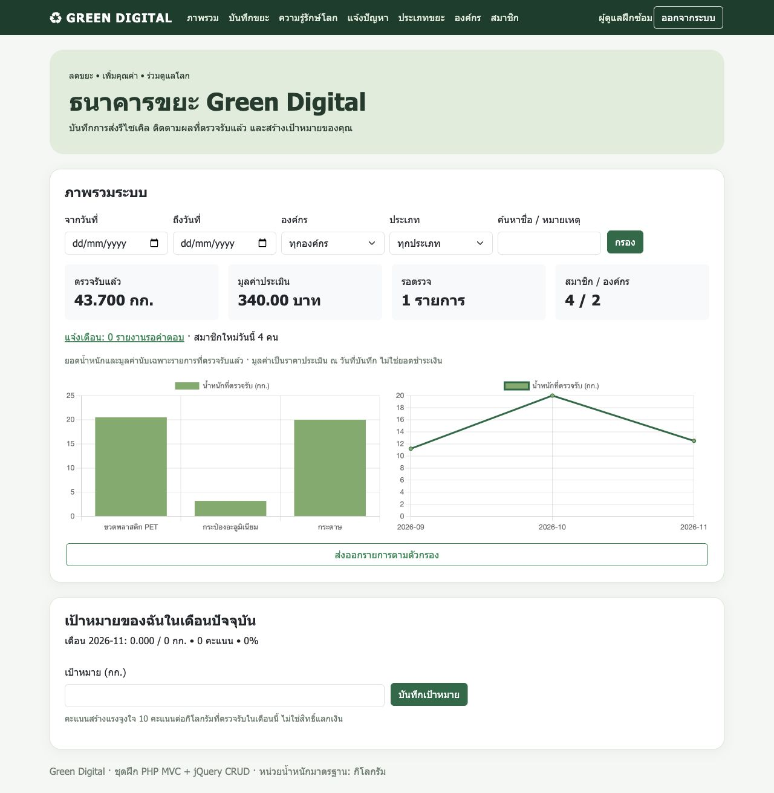

บัญชีผู้ดูแล admin@example.test · รหัสผ่าน Green1234! (บัญชีสมมติสำหรับห้องฝึก)
เปิดเอกสารนี้ได้แบบออฟไลน์ ภาพ ERD ในหัวข้อฐานข้อมูลแสดงเป็น Mermaid source สำหรับนำไปวาดต่อ

Green Digital — ชุดฝึกแข่งขัน ปวส.
ระบบธนาคารขยะ PHP 8 + PDO + jQuery 3.7.1 + Bootstrap 5.3.3 + DataTables 1.13.8 + Chart.js 4.4.8 ใช้ไฟล์ไลบรารีภายในชุด ไม่ต้องต่ออินเทอร์เน็ตขณะฝึก
ติดตั้งใน XAMPP (Windows)
- แตก ZIP ให้ได้
C:\xampp\htdocs\greendigitalโดยภายในมีapp,public,sql,storage - เปิด Apache และ MySQL ใน XAMPP Control Panel
- เปิด phpMyAdmin แล้ว Import
sql/greendigital.sqlเพื่อสร้างฐานข้อมูลใหม่ชื่อgreendigital - Import
sql/demo.sqlครั้งเดียว เพื่อใส่บัญชีและข้อมูลสมมติสำหรับฝึกซ้อม - ตรวจ
app/core/Config.php: host127.0.0.1, port3306, databasegreendigital, userroot, password ว่าง ตรงกับ XAMPP ค่าเริ่มต้น หากเครื่องใช้ค่าอื่นให้แก้ไฟล์นี้ - เปิด
http://localhost/greendigital/public/ไม่ใช่เปิดไฟล์ PHP ด้วยการดับเบิลคลิก - ลองเข้าสู่ระบบ แล้วใช้เมนูบันทึกขยะ → เปิดรายการ → ตรวจรับ → ดูภาพรวม
ใช้ PHP 8.0 ขึ้นไป พร้อม pdo_mysql, mbstring, fileinfo, session และให้เว็บเซิร์ฟเวอร์เขียนโฟลเดอร์ storage ได้ ภาพเก็บนอก public และเรียกดูผ่าน API ที่ตรวจสิทธิ์
ชุดนี้เป็นฐานข้อมูลรุ่นใหม่ ชื่อตารางและเส้นทาง API เปลี่ยนจาก ZIP ต้นฉบับเพื่อใช้รูปแบบเดียวกันในการฝึก ไม่ใช่ patch สำหรับฐานข้อมูลเก่า ห้ามนำเข้า SQL ทับฐานข้อมูลที่มีข้อมูลจริง หากมีฐานข้อมูลชื่อเดียวกันให้สร้างชื่อใหม่ แล้วแก้ CREATE DATABASE, USE ในไฟล์ SQL ทั้งสองและค่า database ให้ตรงกัน
บัญชีฝึกซ้อม
| อีเมล | บทบาท |
|---|---|
| admin@example.test | ผู้ดูแล — จัดการสมาชิกและงานทั้งหมด |
| staff@example.test | เจ้าหน้าที่ — จัดการประเภท องค์กร เนื้อหา ตรวจรับ และตอบรายงาน |
| student@example.test | สมาชิก — ส่งขยะ ติดตามผล เป้าหมาย โปรไฟล์ และแจ้งปัญหา |
รหัสผ่านทุกบัญชี: Green1234! · รหัสกู้คืนบัญชีตัวอย่าง: demo-recovery-2026
บัญชีนี้ใช้สำหรับห้องฝึกเท่านั้น ก่อนใช้งานกับข้อมูลจริงให้เปลี่ยนรหัสผ่านและสร้างรหัสกู้คืนใหม่จากหน้าโปรไฟล์ ใช้ HTTPS บนเครื่องให้บริการจริง และตั้งค่าบัญชีฐานข้อมูลเฉพาะระบบ
วิธีใช้งานตามบทบาท
- สมาชิก: เพิ่มรายการส่งขยะ เลือกองค์กร/ประเภท น้ำหนักเป็นกิโลกรัม แนบภาพได้ แก้ไขหรือลบรายการของตนก่อนตรวจรับ ติดตามผลและคะแนนในภาพรวม ตั้งเป้าหมายรายเดือน
- เจ้าหน้าที่: เปิดรายการ ตรวจสอบข้อมูลแล้วเลือก รอตรวจ / ตรวจรับแล้ว / ไม่ผ่าน พร้อมเหตุผล หากต้องแก้รายการตรวจรับแล้วให้คืนสถานะรอตรวจก่อน
- ผู้ดูแล: เพิ่ม/แก้ไขสมาชิก ระงับหรือคืนสิทธิ์ บัญชีที่ถูกระงับใช้ session เดิมต่อไม่ได้ ไม่อนุญาตให้ลดสิทธิ์หรือระงับบัญชีตนเอง
- เนื้อหา: เพิ่ม แก้ไข ลบ ค้นหา แนบภาพ และกำหนดวันเปิด–ปิด ช่องเวลาว่างคือไม่จำกัดด้านนั้น เจ้าหน้าที่เห็นทุกบทความ สมาชิกเห็นเฉพาะช่วงที่เผยแพร่
- แจ้งปัญหา: สมาชิกส่งข้อความและอ่านคำตอบของตน เจ้าหน้าที่อ่านและตอบกลับ รายงานที่ยังไม่อ่านแสดงในภาพรวม
- รายงาน: ตารางค้นหา/เรียงลำดับ/แบ่งหน้าและส่งออก CSV ตามผลค้นหา ภาพรวมกรองช่วงวัน องค์กร ประเภท และคำค้น พร้อมกราฟประเภท/รายเดือน ปุ่มส่งออกในภาพรวมส่งเฉพาะรายการตรวจรับซึ่งตรงกับยอดรวม
คะแนน = ปัดลง (น้ำหนักตรวจรับในเดือนปัจจุบัน × 10) มูลค่า = น้ำหนัก × ราคาประเมินที่บันทึกไว้กับรายการ การเปลี่ยนราคาประเภทภายหลังไม่เปลี่ยนยอดเดิม คะแนนไม่ใช่เงินและไม่มีระบบชำระเงินจริง
ยอดน้ำหนักหมายถึงขยะที่เจ้าหน้าที่ตรวจรับเพื่อรีไซเคิล ไม่ใช่การวัดคาร์บอนหรือการยืนยันว่าขยะผ่านกระบวนการรีไซเคิลปลายทางแล้ว
ลืมรหัสผ่าน
ตอนสมัคร ระบบแสดงรหัสกู้คืนหนึ่งครั้ง ให้ผู้ใช้จดเก็บไว้ หน้า “ลืมรหัสผ่าน” รับอีเมลและรหัสกู้คืน ยืนยันสำเร็จจึงตั้งรหัสใหม่ได้ภายใน 5 นาที สิทธิ์ใช้ได้ครั้งเดียวและระบบออกรหัสกู้คืนชุดใหม่ ไม่ต้องพึ่งอีเมลหรืออินเทอร์เน็ต
บัญชีที่ผู้ดูแลสร้างให้ ให้เข้าสู่ระบบครั้งแรกด้วยรหัสเริ่มต้น แล้วไปโปรไฟล์เพื่อสร้างรหัสกู้คืน ระบบไม่ใช้คำตอบความปลอดภัยแบบข้อความธรรมดา หากไม่มีทั้งรหัสผ่านและรหัสกู้คืน ผู้สอนต้องจัดการบัญชีผ่านฐานข้อมูลในสภาพแวดล้อมฝึก
ทดลองด้วย SQLite (ทางเลือก ไม่ใช้แทนการซ้อม XAMPP)
macOS/Linux ที่มี PHP และ pdo_sqlite:
GD_DRIVER=sqlite php setup.php
GD_DRIVER=sqlite php -S 127.0.0.1:8000 -t public
Windows Command Prompt:
set GD_DRIVER=sqlite
C:\xampp\php\php.exe setup.php
C:\xampp\php\php.exe -S 127.0.0.1:8000 -t public
เปิด http://127.0.0.1:8000/ ตัวติดตั้งสร้างเฉพาะฐานข้อมูลใหม่พร้อมบัญชีตัวอย่างและบทความหนึ่งรายการ ไม่ลบฐานข้อมูลที่มีอยู่ การจำลองการแข่งขันให้ใช้ MariaDB/MySQL ตามขั้นตอน XAMPP ด้านบน
โครงสร้างสำหรับการสอน
public/index.php รับคำขอและส่งต่อ
app/core/Config.php ตั้งค่าฐานข้อมูล
app/core/bootstrap.php session, CSRF, validation, สิทธิ์
app/controllers/ApiController.php ตรวจข้อมูลและจัดการแต่ละงาน
app/models/Store.php PDO และ SQL
app/views/layout.php โครงหน้า Bootstrap 5
public/assets/js/app.js jQuery CRUD, ฟอร์ม, ตาราง, กราฟ
public/assets/vendor/ ไลบรารีพร้อมใช้แบบออฟไลน์
sql/greendigital.sql schema MySQL/MariaDB
sql/demo.sql ข้อมูลสมมติ
setup.php ติดตั้งบัญชีผ่าน CLI / สร้าง SQLite
storage/ ภาพที่อัปโหลด (ไม่อยู่ใน public)
tests/integration.py ทดสอบ HTTP ด้วย Python มาตรฐาน
อ่านต่อ: docs/คู่มือฝึก-jquery.md, docs/เกณฑ์และการสาธิต.md, docs/ฐานข้อมูล.md, docs/ผลทดสอบ.md
ปัญหาที่พบบ่อย
| อาการ | วิธีตรวจ |
|---|---|
| เชื่อมต่อฐานข้อมูลไม่ได้ | เปิด MySQL ตรวจชื่อฐานข้อมูล พอร์ต และ Config.php |
| Could not find driver | เปิด pdo_mysql ใน php.ini และ restart Apache |
| ภาพอัปโหลดไม่สำเร็จ | storage ต้องเขียนได้; ตั้ง upload_max_filesize ≥ 3M และ post_max_size ≥ 4M |
| ลบประเภทหรือองค์กรไม่ได้ | มีรายการขยะอ้างอิงอยู่ ให้คงข้อมูลไว้หรือจัดการรายการที่เกี่ยวข้องก่อน |
| กดบันทึกแล้วแจ้งโหลดหน้าใหม่ | CSRF/session หมดอายุ ให้โหลดหน้าและเข้าสู่ระบบใหม่ |
| เข้าสู่ระบบหลายครั้งไม่สำเร็จ | ตรวจบัญชี/สถานะ ระบบจำกัดความพยายามผิด 8 ครั้งต่อ 15 นาที |
| หน้าเว็บไม่มีรูปแบบ | ต้องเปิด URL ใต้ public และต้องคัดลอก assets/vendor ไปครบ |
| กราฟไม่มีข้อมูล | ต้องมีรายการที่ตรวจรับแล้ว และอยู่ในช่วงตัวกรอง |
| Import demo ซ้ำเกิด duplicate | ข้อมูลสาธิตมีแล้ว ไม่ต้อง Import ซ้ำ |
การนำขึ้นเครื่องแข่งขัน
คัดลอกไฟล์ทั้งหมด ติดตั้งฐานข้อมูลและกำหนดค่าบนเครื่องปลายทาง ทดสอบ URL จริงจากเครื่องอื่น ตั้ง document root ไป public หากผู้จัดอนุญาต หรือใช้เส้นทาง /greendigital/public/ บน Apache ที่อ่าน .htaccess ได้ ตรวจว่า URL /greendigital/storage/ และ /greendigital/app/ ถูกปฏิเสธ หากใช้ Nginx ต้องกำหนด root เป็น public เพราะ Nginx ไม่อ่าน .htaccess
การขึ้นเครื่องแม่ข่ายสนามแข่งขันยังต้องทดสอบกับค่าที่ผู้จัดให้จริง ชุดนี้ไม่ได้เผยแพร่ไปยังเซิร์ฟเวอร์สาธารณะ
คู่มือฝึก jQuery CRUD — จากหนึ่งตารางสู่ทั้งระบบ
เป้าหมาย: นักเรียนเขียนโครงเดิมจากความเข้าใจ แล้วเปลี่ยนชื่อฟิลด์/กฎธุรกิจตามโจทย์ได้ ไม่จำโค้ดทุกบรรทัดรวดเดียว
แผนที่การทำงาน
View → jQuery → public/index.php → ApiController → Store → ฐานข้อมูล
← JSON / ข้อมูลตาราง ←
ชุดนี้ใช้รูปแบบ URL เดียวกันทุกตาราง:
| งาน | Method | URL | ข้อมูลหลัก |
|---|---|---|---|
| อ่านหลายรายการ | GET | ?r=/api/list | kind=types |
| อ่านหนึ่งรายการ | GET | ?r=/api/detail | kind=types, id |
| เพิ่ม/แก้ไข | POST | ?r=/api/save | kind=types, id, name, price, _csrf |
| ลบ | POST | ?r=/api/delete | kind=types, id, _csrf |
kind คือชื่องานที่อยู่ในรายการอนุญาตเท่านั้น PHP ตรวจสิทธิ์ซ้ำทุกครั้ง
บทที่ 1: ประเภทขยะ
จำสามฟิลด์: id, name, price หน่วยน้ำหนักทุกประเภทเป็น kg
- เปิด
Store::save()ดู INSERT และ UPDATE ใช้ PDO prepare/execute - เปิด
ApiController::save()ดูcase 'types'และrequireStaff() - เปิด
app.jsดูlisting()→openEditor()→ submit ของ#editForm - ทดลองเพิ่ม แก้ชื่อ แก้ราคา ลบ และเพิ่มชื่อซ้ำเพื่ออ่านข้อความผิดพลาด
สูตรฝั่งหน้าจอ
อ่าน → เปิด → เติม → ส่ง → ตรวจ → โหลดใหม่
โค้ดย่อประกอบการเรียน (ใช้ endpoint ของชุดจริง แต่ต้องสร้าง HTML ให้มี ID ตรงกับตัวอย่าง):
// <form id="typeForm"> ต้องมี name: id, name, price
// ตาราง #typeTable ต้องมีหัวตาราง 4 ช่อง
const token = $('meta[name="csrf-token"]').attr('content');
const table = $('#typeTable').DataTable({
ajax: { url: '?r=/api/list&kind=types', dataSrc: 'data' },
columns: [
{ data: 'id' },
{ data: 'name', render: $.fn.dataTable.render.text() },
{ data: 'price', render: $.fn.dataTable.render.text() },
{ data: null, defaultContent: '<button type="button" class="edit">แก้ไข</button>' }
]
});
$('#addType').on('click', function () {
$('#typeForm')[0].reset();
$('#typeForm [name=id]').val(0);
});
$('#typeTable').on('click', '.edit', function () {
const row = table.row($(this).closest('tr')).data();
$.getJSON('?r=/api/detail', { kind: 'types', id: row.id })
.done(function (data) {
$('#typeForm [name=id]').val(data.id);
$('#typeForm [name=name]').val(data.name);
$('#typeForm [name=price]').val(data.price);
})
.fail(function (xhr) { alert(xhr.responseJSON?.message || 'โหลดไม่สำเร็จ'); });
});
$('#typeForm').on('submit', function (event) {
event.preventDefault();
const data = new FormData(this);
data.set('kind', 'types');
data.set('_csrf', token);
$.ajax({
url: '?r=/api/save', method: 'POST', data,
dataType: 'json', processData: false, contentType: false
})
.done(function (res) {
if (!res.success) { alert(res.message); return; }
table.ajax.reload(null, false);
})
.fail(function (xhr) { alert(xhr.responseJSON?.message || 'บันทึกไม่สำเร็จ'); });
});
ระบบจริงมี post() รวมโค้ดส่ง AJAX และ CSRF ให้ทุกฟอร์มใช้ร่วมกัน ฟังก์ชันนี้คืน Promise จึงใช้ await กับ try/catch เพื่อเรียงขั้นตอนอ่านง่าย หลักเดียวกับ .done() / .fail() ในตัวอย่าง ครูเลือกเริ่มจากแบบใดแบบหนึ่งแล้วให้นักเรียนแปลงเทียบกัน
ตัวอย่างลบ:
if (confirm('ยืนยันการลบ?')) {
$.post('?r=/api/delete', {kind:'types', id:id, _csrf:token})
.done(function(res) { if(res.success) table.ajax.reload(null,false); })
.fail(function(xhr) { alert(xhr.responseJSON?.message || 'ลบไม่สำเร็จ'); });
}
คำสำคัญที่ต้องอธิบายได้
| คำ | ความหมาย |
|---|---|
$(function(){ ... }) |
รอ DOM พร้อม |
.on('click', '.edit', ...) |
รับคลิกปุ่มที่สร้างภายหลัง |
.val() |
อ่าน/เติม input |
.text() / esc() |
แสดงข้อความผู้ใช้โดยไม่แปลเป็น HTML |
preventDefault() |
ยกเลิก submit ปกติ |
FormData |
รวมข้อมูลและไฟล์; field ต้องมี name |
processData:false |
ไม่ให้ jQuery แปลง FormData |
contentType:false |
ให้เบราว์เซอร์สร้าง multipart boundary |
dataType:'json' |
คาดว่าคำตอบเป็น JSON |
ajax.reload(null,false) |
โหลดข้อมูลใหม่และคงหน้าตาราง |
try/catch |
รับผลสำเร็จ/ผิดพลาดเมื่อใช้ await |
สูตรฝั่ง PHP
สิทธิ์ → CSRF → ข้อมูล → SQL → JSON
- ตรวจ session และสถานะสมาชิกในทุก API ที่ต้องล็อกอิน
- ปุ่มซ่อนบนจอไม่ใช่การป้องกันสิทธิ์
kindตรวจ whitelist ก่อนใช้เป็นชื่อตาราง- ข้อมูลผู้ใช้ส่งผ่าน
?placeholders ไม่ต่อเข้า SQL id=0เพิ่ม,id>0แก้ไข; ต้องตรวจว่ารายการมีอยู่จริง- รายการขยะตรวจเจ้าของ และห้ามแก้หลังตรวจรับ
- ผู้ใช้ส่ง
user_idหรือstatus=approvedมาเองก็ไม่มีผล เพราะ PHP กำหนดค่า - ส่ง JSON พร้อม HTTP status: 401 ยังไม่ล็อกอิน, 403 ไม่มีสิทธิ์, 404 ไม่พบ, 409 ข้อมูลซ้ำ/ถูกอ้างอิง, 419 CSRF, 422 ข้อมูลผิด, 429 ลองถี่เกินไป
แปลงหนึ่งชุดเป็นหลายงาน
| kind | ฟิลด์เพิ่มจาก id | กฎสำคัญ |
|---|---|---|
| types | name, price | เจ้าหน้าที่; ราคาไม่ติดลบ |
| organizations | name | เจ้าหน้าที่; ชื่อไม่ซ้ำ |
| users | email, full_name, role, active, password ตอนเพิ่ม | เฉพาะ admin; ป้องกันระงับตนเอง |
| contents | title, body, image, publish_at, expire_at, active | เวลาเปิดก่อนปิด; สมาชิกเห็นเฉพาะเผยแพร่ |
| records | org_id, type_id, weight, record_date, note, image | เจ้าของ; น้ำหนัก >0; วันที่ไม่เป็นอนาคต |
| reports | message | สมาชิกเพิ่ม; เจ้าหน้าที่ตอบด้วย /api/reply |
ใช้ FormData เหมือนกันทุกฟอร์ม จึงเพิ่มภาพได้โดยไม่เปลี่ยนสูตร AJAX
ตารางฝึก 8 รอบ
| รอบ | งาน | เกณฑ์ผ่าน |
|---|---|---|
| 1 | วาด ERD และสร้างตาราง | PK/FK ถูกต้อง ทดลองข้อมูลผิด |
| 2 | CRUD types | เขียนจากหน้าเปล่าได้ |
| 3 | organizations | เปลี่ยนตารางโดยใช้รูปแบบเดิม |
| 4 | login / session / roles | ลองเรียก URL โดยตรงแล้วถูกปฏิเสธ |
| 5 | users / contents | ระงับบัญชีและตั้งเวลาแสดงได้ |
| 6 | records + ภาพ + review | เจ้าของแก้ได้ก่อนตรวจรับเท่านั้น |
| 7 | filters / chart / CSV / goals | คำนวณยอดด้วยมือเทียบระบบ |
| 8 | จับเวลา 8 ชั่วโมง | ติดตั้งเครื่องอื่นและสาธิตครบ |
แต่ละรอบ: ดูตัวอย่าง → เขียนตาม → ปิดต้นฉบับเขียนใหม่ → เปลี่ยนโจทย์ → อธิบายให้เพื่อนฟัง
แบบทดสอบที่ครูใช้ถาม
- ทำไมข้อมูลจาก
.val()ต้องตรวจใน PHP อีกครั้ง? - ทำไมราคาประเมินเก็บใน records ทั้งที่ types มีราคาแล้ว?
- ถ้าเปลี่ยน id ในคำขอเป็นของเพื่อน ระบบป้องกันตรงไหน?
- ถ้าลบประเภทที่มีรายการอ้างอิง ควรเกิดอะไร?
- ทำไมยอดรายงานไม่รวม pending และ rejected?
- เหตุใดต้อง encode ข้อความทั้งในตารางและใน value ของ input?
- หากส่งฟอร์มแล้วเครือข่ายขาด จะตรวจได้อย่างไรว่าบันทึกแล้ว?
- CSV ที่ตรงกับตัวกรองต้องใช้ชุดข้อมูลใด?
แบ่งทีม 3 คน / คอมพิวเตอร์ 2 เครื่อง
คนที่ 1 ฐานข้อมูลและ PHP, คนที่ 2 หน้าจอและ jQuery, คนที่ 3 ทดสอบข้อมูลและเกณฑ์/เตรียมนำเสนอ แล้วสลับใช้เครื่องเป็นช่วง ทุกคนต้องอธิบายเส้นทางข้อมูลหนึ่งรายการได้ครบ ไม่ให้คนใดรู้เฉพาะไฟล์ของตน
ฐานข้อมูลและความสัมพันธ์
ฐานข้อมูลใหม่ greendigital ใช้ UTF-8 (utf8mb4), InnoDB และ Foreign Key น้ำหนักเก็บ DECIMAL(12,3) ราคา DECIMAL(10,2) เพื่อกำหนดความละเอียดชัดเจน คำนวณยอดรายงานจากรายการตรวจรับเท่านั้น
erDiagram
users ||--o{ records : sends
users o|--o{ records : reviews
organizations ||--o{ records : receives
types ||--o{ records : classifies
users ||--o{ reports : reports
users ||--o{ goals : sets
users {
int id PK
varchar email UK
varchar password
varchar full_name
varchar role
int active
varchar recovery_hash
int session_version
datetime created_at
}
organizations {
int id PK
varchar name UK
}
types {
int id PK
varchar name UK
decimal price
}
records {
int id PK
int user_id FK
int org_id FK
int type_id FK
decimal weight
decimal price
date record_date
text note
varchar image
varchar status
varchar review_note
int reviewer_id FK
datetime created_at
}
reports {
int id PK
int user_id FK
text message
int is_read
text reply
datetime created_at
}
goals {
int id PK
int user_id FK
varchar month
decimal target
}
contents {
int id PK
varchar title
text body
varchar image
datetime publish_at
datetime expire_at
int active
datetime created_at
}
attempts {
int id PK
varchar bucket
int attempted_at
}
contents เป็นบทความส่วนกลาง ไม่ผูกเจ้าของรายบุคคล ส่วน attempts เป็นตัวนับความพยายามยืนยันตัวตน แยกออกจากข้อมูลธุรกิจ
| ตาราง | รายละเอียดสำคัญ |
|---|---|
| users | email ไม่ซ้ำ, password และ recovery_hash เก็บ hash, role = admin/staff/member, active 1/0, session_version ใช้ยกเลิก session เก่า |
| organizations | ชื่อองค์กรไม่ซ้ำ ลบไม่ได้ถ้ามี records อ้างอิง |
| types | ชื่อประเภทไม่ซ้ำ ราคาต่อกิโลกรัมไม่ติดลบ |
| records | เจ้าของ องค์กร ประเภทต้องมีจริง; reviewer_id ว่างได้ก่อนตรวจ; pending/approved/rejected; ราคาเก็บเป็น snapshot |
| contents | publish_at/expire_at ว่างได้; เวลาเปิดรวมขอบเขต เวลา expire ไม่นับรวม |
| reports | ผู้แจ้งต้องมีจริง; is_read เปลี่ยนเมื่อเจ้าหน้าที่ตอบ; เก็บข้อความเดิมไว้ |
| goals | unique(user_id,month) ทำให้หนึ่งคนมีเป้าหมายได้หนึ่งค่าต่อเดือน |
| attempts | bucket เป็น SHA-256 ของประเภทงานกับตัวระบุ; เก็บเฉพาะช่วง 15 นาทีล่าสุดเมื่อมีการตรวจ |
ไฟล์ SQL เป็นแหล่งอ้างอิงชื่อฟิลด์และชนิดข้อมูลที่แน่นอน Diagram แสดงเฉพาะฟิลด์หลักของ users; phone/address อยู่ใน SQL ด้วย
กฎข้อมูลที่ต้องรักษา
- ผู้ใช้ทั่วไปอ่านหรือแก้ records/reports ของผู้อื่นไม่ได้ แม้เปลี่ยน ID เอง
- สมาชิกส่งสถานะอนุมัติหรือ user_id มาก็ไม่มีผล ค่าเหล่านี้กำหนดที่ PHP
- รายการ approved แก้หรือลบไม่ได้จนเจ้าหน้าที่คืนสถานะ pending
- ทุกน้ำหนักใช้กิโลกรัม ไม่มีการรวมหน่วยชิ้นกับกิโลกรัม
- ภาพเก็บชื่อสุ่มใน storage; API ตรวจเจ้าของหรือสิทธิ์แสดงเนื้อหาก่อนส่งภาพ
- ไม่ลบสมาชิก เพราะข้อมูลประวัติอ้างอิงอยู่ ใช้การระงับแทน
- การแก้ราคาประเภทไม่ย้อนเปลี่ยนราคาของ records เดิม; การแก้รายการที่ยังไม่ตรวจรับจะบันทึกราคาปัจจุบัน
ตัวอย่างคำนวณด้วยมือ
ขวดพลาสติก 12.5 กก. × 8 บาท = 100 บาท กระดาษ 20 กก. × 4 บาท = 80 บาท ถ้าทั้งสองรายการตรวจรับแล้ว ยอด = 32.5 กก. / 180 บาท ถ้ารายการกระดาษยัง pending ยอด = 12.5 กก. / 100 บาท
คะแนนเดือนปัจจุบันของสมาชิก = floor(น้ำหนัก approved ในเดือน × 10) ความสำเร็จเป้าหมาย = min(100, น้ำหนัก approved ในเดือน / เป้าหมาย × 100)
ไม่มีตารางธุรกรรมจ่ายเงินหรือค่าคำนวณ CO₂ เพราะไม่ได้ดำเนินการชำระเงินจริงและไม่ได้กำหนดปัจจัยการปล่อยคาร์บอน
แผนตรวจงานและสาธิตการแข่งขัน
อ้างอิงเอกสาร “เกณฑ์การแข่งขัน.pdf” ที่ผู้สอนส่งมา: ทักษะการพัฒนานวัตกรรมเทคโนโลยีธุรกิจดิจิทัล ปวส. ปีการศึกษา 2568–2572 หน้า 2–11 รายละเอียดวันแข่งขันให้ตรวจประกาศเจ้าภาพเพิ่มเติม
ตารางเชื่อมเกณฑ์กับระบบ
| เกณฑ์ | คะแนน | จุดสาธิต / งานที่ทีมต้องเตรียม |
|---|---|---|
| Design Thinking | 10 | สัมภาษณ์ผู้ใช้จริง นิยามปัญหา เสนอแนวคิด วาดต้นแบบ และบันทึกผลทดสอบ |
| Business Model Canvas | 10 | เตรียม 9 ช่องตามบริบทวิทยาลัยและพันธมิตรรับซื้อ |
| ฐานข้อมูล | 10 | SQL, PK/FK, unique, DECIMAL, ERD ในฐานข้อมูล.md |
| Authentication & Security | 8 | Login/Logout, session, password hash, role และทดสอบ URL ที่ไม่มีสิทธิ์ |
| สมาชิก | 8 | สมัคร, ตรวจข้อมูล, โปรไฟล์, เปลี่ยนรหัส, กู้คืนด้วย recovery code |
| ผู้ดูแลระบบ | 9 | จัดการ/ระงับสมาชิก, ตั้งเวลาเนื้อหา, แจ้งเตือน, dashboard |
| Green Digital Application | 15 | ส่งขยะ, ตรวจรับ, ติดตามผล, เป้าหมาย; เจ้าหน้าที่จัดการประเภท/องค์กร; หน้าจอย่อขยาย |
| รายงาน | 10 | สมาชิก/เนื้อหา/ขยะ; CSV; กราฟประเภทและรายเดือน; กรองวัน/องค์กร/ประเภท/คำค้น |
| ประสิทธิภาพและคุณค่า | 10 | วัดน้ำหนักที่ตรวจรับได้, UX, เป้าหมาย/คะแนนและการมีส่วนร่วม; ทีมต้องอธิบายคุณค่าจากข้อมูลจริง |
| นำเสนอ | 10 | แนะนำตัวไทย/ภาษาต่างประเทศ อธิบายแนวคิด ธุรกิจ สาธิต ตอบคำถาม บริหารเวลา |
ตารางนี้เป็นแผนเตรียมหลักฐาน ไม่ใช่การรับรองคะแนน ฟังก์ชันเชิงสิ่งแวดล้อมระดับชาติต้องแสดงอย่างน้อย 2 ฟังก์ชันทั้งฝั่งผู้ใช้และผู้ดูแลตามข้อกำหนด พร้อมอย่างน้อย 2 ฟังก์ชันอำนวยความสะดวก/กรองค้นหาตามรายละเอียดเอกสาร
รายการตรวจแบบลงมือทำ
- [ ] สมัครสมาชิก อีเมลผิด/ซ้ำ/รหัสสั้น ต้องถูกปฏิเสธ
- [ ] จดรหัสกู้คืน ทดลองกู้บัญชี และยืนยันว่ารหัสกู้คืนเดิมใช้ซ้ำไม่ได้
- [ ] เปลี่ยนโปรไฟล์ โหลดหน้าใหม่ ค่าต้องยังอยู่
- [ ] เข้าด้วย member แล้วเรียก users API ตรง ๆ ต้องได้ 403
- [ ] แก้หรือลบ ID รายการของเพื่อน ต้องได้ 403
- [ ] ระงับสมาชิกที่ล็อกอินอยู่ สมาชิกต้องเรียกข้อมูลต่อไม่ได้
- [ ] สร้างประเภท/องค์กร เพิ่ม แก้ ลบ และค้นหา
- [ ] ลบประเภทที่ records ใช้อ้างอิง ต้องแจ้งข้อขัดแย้ง
- [ ] ส่งขยะพร้อมภาพ แก้โดยไม่เลือกภาพใหม่ ภาพเดิมต้องอยู่
- [ ] น้ำหนักศูนย์/ลบ, วันที่อนาคต, ไฟล์ PHP หรือเกิน 3 MB ต้องไม่ผ่าน
- [ ] ก่อนตรวจรับยอดไม่เพิ่ม หลังตรวจรับยอดเพิ่มตามน้ำหนักจริง
- [ ] approved ต้องแก้หรือลบไม่ได้ คืน pending แล้วจึงแก้ได้
- [ ] เปลี่ยนราคาประเภทแล้วมูลค่ารายการเดิมต้องไม่เปลี่ยน
- [ ] ตั้งบทความอนาคต/หมดอายุ/ซ่อน สมาชิกต้องไม่เห็น
- [ ] แจ้งปัญหา → ผู้ดูแลเห็นแจ้งเตือน → ตอบ → สมาชิกเห็นคำตอบ
- [ ] ตั้งเป้าหมายรายเดือน ตรวจคะแนนกับน้ำหนักด้วยมือ
- [ ] กรองช่วงวัน/องค์กร/ประเภท แล้ว CSV ต้องตรงกับข้อมูลที่เลือก
- [ ] ค้นหาในตารางแล้วส่งออก ต้องส่งเฉพาะรายการที่ค้นพบ
- [ ] ย่อหน้าจอ 390px เมนูเปิดได้ ฟอร์มไม่ล้น ตารางเลื่อนแนวนอนได้
- [ ] ตัดอินเทอร์เน็ตแล้วโหลดหน้าในเครือข่ายท้องถิ่น ไลบรารีต้องยังทำงาน
- [ ] ติดตั้งบนเครื่องปลายทาง เปิดผ่านเครื่องอื่น และตรวจไฟล์ภาพ/ส่งออกจริง
โครงนำเสนอ 20 นาที
| นาที | เรื่อง |
|---|---|
| 0–2 | แนะนำตัวไทยและภาษาต่างประเทศ ปัญหาที่ทีมพบ |
| 2–5 | Design Thinking: ผู้ใช้ → ปัญหา → แนวคิด → ต้นแบบ → ทดสอบ |
| 5–7 | BMC: ผู้ใช้ ผู้สนับสนุน คุณค่า ต้นทุน รายได้ที่เป็นไปได้ |
| 7–13 | สมาชิกส่งขยะ เจ้าหน้าที่ตรวจรับ ภาพรวมเปลี่ยน เป้าหมายและคะแนน |
| 13–16 | สิทธิ์ ระงับบัญชี เนื้อหาตามเวลา รายงาน/CSV |
| 16–18 | ERD เหตุผลเลือกเทคโนโลยี ข้อจำกัดและแนวทางต่อยอด |
| 18–20 | สรุปคุณค่าจากข้อมูลทดสอบ และเผื่อคำถามตามรูปแบบที่กรรมการกำหนด |
โครง Design Thinking สำหรับให้นักเรียนเติมหลักฐาน
- Empathize: สัมภาษณ์นักเรียน ผู้เก็บขยะ และร้านรับซื้อเรื่องการแยก ชั่ง และติดตามผล
- Define: เลือกปัญหาที่พบจริง เช่น บันทึกกระดาษสูญหายและไม่เห็นผลสะสม
- Ideate: เปรียบเทียบทางเลือก แล้วอธิบายเหตุผลเลือกธนาคารขยะพร้อมการตรวจรับ
- Prototype: วาด 3 หน้าหลัก ส่งขยะ/ตรวจรับ/ภาพรวม ก่อนเขียนโค้ด
- Test: ให้ผู้ใช้ทำภารกิจเดียวกัน จับเวลา จดข้อผิดพลาด ปรับแล้วทดสอบซ้ำ
อย่าอ้างว่ามีการสัมภาษณ์หรือได้ผลลัพธ์จริงหากยังไม่ได้ทำ ข้อมูลสาธิตในระบบเป็นข้อมูลสมมติ
โครง BMC สำหรับอภิปราย
ลูกค้า: วิทยาลัย/ชุมชน; ผู้ใช้: นักเรียนและเจ้าหน้าที่ คุณค่า: ประวัติขยะตรวจสอบได้ เห็นผลสะสม ลดเวลารวมรายงาน ช่องทาง: เครือข่ายวิทยาลัยและจุดรับขยะ ความสัมพันธ์: เป้าหมายรายเดือน ความรู้และการตอบปัญหา รายได้ที่เสนอให้ศึกษา: บริการติดตั้ง/ดูแลระบบ หรือการสนับสนุนกิจกรรม (ยังไม่ใช่รายได้จริง) ทรัพยากร: บุคลากร ระบบ เครื่องชั่ง และจุดรับ กิจกรรม: รับขยะ ตรวจข้อมูล ประสานร้านรับซื้อ และสรุปผล พันธมิตร: ร้านรับซื้อ ชุมชน และหน่วยงานสิ่งแวดล้อม ต้นทุน: ดูแลระบบ อุปกรณ์ การจัดเก็บ/ขนส่ง และอบรม
แผน 8 ชั่วโมงพัฒนาระบบ
ชั่วโมง 1 ฐานข้อมูลและโครงหน้า; 2 Login/สิทธิ์และ types; 3–4 records/users/contents; 5 โปรไฟล์/กู้บัญชี/แจ้งเตือน; 6 รายงาน/กราฟ/ส่งออก; 7 ทดสอบทุกบทบาทและมือถือ; 8 ติดตั้งเครื่องปลายทางและซ้อมสาธิต
เริ่มทดสอบเครื่องแม่ข่ายตั้งแต่ระบบขั้นต่ำพร้อม ไม่รอชั่วโมงสุดท้าย เอกสารระดับชาติมีเงื่อนไขว่าต้องอัปโหลดและเรียกใช้งานบนเครื่องแม่ข่ายที่จัดให้ได้
ผลตรวจรับชุดฝึก Green Digital
วันที่ตรวจ: 4 พฤศจิกายน 2569 (Asia/Bangkok)
สภาพแวดล้อม
- PHP 8.5.11 พร้อม PDO, mbstring, fileinfo และ session
- MariaDB 13.0.2 บนเครื่องทดสอบแยก ใช้ schema และ demo SQL จากชุดส่งมอบ
- SQLite ผ่าน PDO สำหรับทดสอบทางเลือก
- ตรวจหน้าจอจริงผ่านเบราว์เซอร์ รวมการจำลองความกว้าง 390 พิกเซล
ชุดออกแบบให้ใช้กับ PHP 8+ / MySQL หรือ MariaDB ใน XAMPP การทดสอบนี้ไม่ได้ทำบน Windows XAMPP หรือเครื่องแม่ข่ายสนามแข่งขันจริง ต้องติดตั้งและลอง URL ของเครื่องปลายทางก่อนวันแข่ง
ผลทดสอบอัตโนมัติ
ผ่าน 150 assertions ต่อฐานข้อมูล (รวมการตรวจ HTTP status และผลลัพธ์ทางธุรกิจ) ใช้ Python มาตรฐานส่ง HTTP จริงไปยัง PHP และฐานข้อมูล ไม่จำลองคำตอบ API
- Login/Logout, สมัคร, ตรวจอีเมลซ้ำ และ CSRF
- session และสิทธิ์ admin/staff/member
- CRUD ประเภท/องค์กร/เนื้อหา/บันทึกขยะ และข้อจำกัด Foreign Key
- ตรวจเจ้าของรายการใน list/detail/save/delete/image
- ไม่ยอมรับการปลอม user_id หรือสถานะอนุมัติจากสมาชิก
- น้ำหนัก ราคา วันที่ ช่วงวัน และความละเอียดทศนิยม
- ตรวจรับ → ยอดน้ำหนัก/มูลค่า → เป้าหมาย/คะแนน
- เปลี่ยนราคาประเภทแล้วประวัติเดิมไม่เปลี่ยน
- ภาพจริง อัปโหลดภาพใหม่ คงภาพเดิม ปฏิเสธไฟล์ปลอมและไฟล์เกิน 3 MB
- เนื้อหาซ่อน/อนาคต/หมดอายุและสิทธิ์อ่านรายละเอียด
- รายงานปัญหา แจ้งเตือน และตอบกลับ
- ระงับบัญชีแล้ว session เดิมใช้ต่อไม่ได้
- เปลี่ยนรหัสผ่าน, ยืนยันกู้คืนก่อน reset, รหัสกู้คืนหมุนเวียน และใช้สิทธิ์ซ้ำไม่ได้
- CSV ตรงกับตัวกรองและป้องกันค่าเริ่มต้นสูตร
- จำกัดการลองรหัสผ่านผิดครบ 8 ครั้ง แล้วครั้งถัดไปได้ HTTP 429
ผลตรวจหน้าจอ
- เข้าสู่ระบบผู้ดูแลและแสดงเมนูตามบทบาท
- เพิ่มประเภทผ่าน Modal แล้วตารางปรับโดยไม่เปลี่ยนหน้า
- เปิดแก้ไขแสดงค่าเดิม บันทึกแล้วตารางแสดงราคาใหม่
- บันทึกน้ำหนัก 12.5 กก. เป็น pending แล้วตรวจรับผ่านหน้าจอ
- ภาพรวมแสดง 12.500 กก. และ 50.00 บาท ตามราคากระดาษ 4 บาท/กก.
- ข้อมูลตัวอย่างจาก demo.sql แสดงยอดตรวจรับ 43.700 กก. และ 340.00 บาท
- ที่ความกว้าง 390px หน้า Dashboard มี bodyWidth = clientWidth = 390 ไม่มีหน้าหลักล้นแนวนอน เมนูย่อเปิดได้
- ตรวจ JavaScript syntax และ PHP syntax ผ่านทุกไฟล์
รูปประกอบ: dashboard.png เป็นหน้าจอจากฐานข้อมูลทดสอบ จึงอาจมีจำนวนสมาชิกมากกว่าฐานข้อมูลตัวอย่างเริ่มต้น
ทำซ้ำการทดสอบ
ใช้ฐานข้อมูลทดสอบแยกเท่านั้น สคริปต์สร้างบัญชีและรายการเพื่อทดสอบ แล้วลบเฉพาะรายการที่ตัวเองสร้างบางส่วน ไม่ใช้กับฐานข้อมูลจริง สร้างฐานข้อมูลใหม่จาก SQL และ demo.sql ก่อนเริ่มรอบตรวจรับ
python3 tests/integration.py http://127.0.0.1:8000 --disposable
แยกไดเรกทอรีข้อมูล SQLite ด้วย GD_SQLITE หรือกำหนด GD_DATABASE/GD_PORT สำหรับ MySQL ตาม Config.php
ขอบเขตชุดฝึก
ชุดนี้ครบสำหรับการฝึกตามแผนและขั้นตอนสาธิตที่แนบ ใช้ตารางฝั่งเบราว์เซอร์เหมาะกับข้อมูลฝึกปริมาณไม่มาก การใช้งานจริงจำนวนมากควรเพิ่ม pagination ฝั่งเซิร์ฟเวอร์ สำรองข้อมูลและติดตามการเปลี่ยนแปลงเพิ่มเติม
Design Thinking, BMC, หลักฐานผลกระทบจากผู้ใช้จริง และการนำเสนอ ต้องให้นักเรียนจัดทำตามบริบทของทีม ข้อมูลสมมติและซอฟต์แวร์เพียงอย่างเดียวไม่รับรองคะแนนแข่งขัน
Green Digital 1.0 · 4 พฤศจิกายน 2569